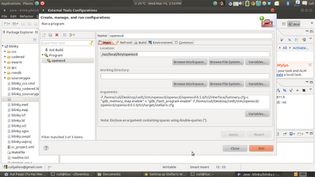
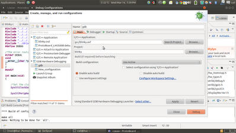
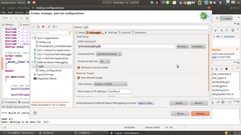
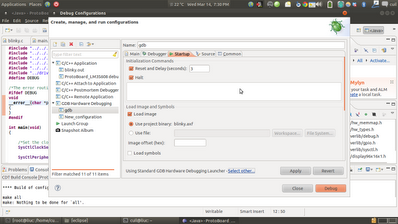
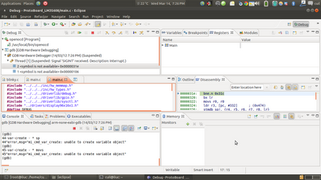

Using OpenOCD with TI and ST Microcontrollers
The Open On-Chip
Debugger (OpenOCD) is aims to provide debugging,
in-system programming and boundary-scan testing for embedded
target systems. OpenOCD provides the ability to flash NAND and
NOR FLASH memory devices that are attached to the processor on
the target system. Flash programming is supported for external CFI compatible flashes (Intel and AMD/Spansion command set) and several internal flashes (LPC2000, AT91SAM7, STR7x, STR9x, LM3 and STM32x).
JTAG: OpenOCD uses a "hardware- interface dongle" to communicate with the JTAG (IEEE 1149.1) compliant TAPs on your target board. A TAP is a "Test Access Port", a module which process special instructions and data. TAPs are daisy-chained within and between chips and boards.
Dongles: OpenOCD currently suppports many types of hardware dongles: USB based, parallel port based, and other standalone boxes that run OpenOCD internally.
The JTAG is a standard debugging interface inbuilt in all ARM microcontrollers.
I use OpenOCD with GDB integrated with Eclipse for debugging with the JTAG.
Every ARM microcontroller has onboard two immediate solutions for debugging JTAG (Joint Test Action Group) and SWD (Serial Wire Debug). These are two standards used for debugging.
So how does it help me ?
Hardware debugging is a boon! Its value is only known to someone who has spent countless hours going over lines of code not being able to figure out where the error is. Hardware debugging using OpenOCD and GDB helps set breakpoints, instruction line execution, set watchpoints and lets the programmer lookup memory and register level values. Debugging can save you hours of precious time.
How do i run it ?
COMMAND LINE
1. Install OpenOCD.
see website, make sure you have all the dependencies. libftdi-dev
2. Run OpenOCD as root
sudo openocd -f ./tcl/interface/luminary-lm3s811.cfg -f ./tcl/target/stellaris.cfg
#make sure you choose the correct interfaces.
#ICDI - In-Circuit Debugging Interface (provided by TI)
3. How do i debug ?
Use gdb debugger to debug, #using telnet is another option
arm-none-eabi-gdb
target remote localhost:4444
monitor reset halt
load
#pressing Ctrl-C anytime will halt execution.
#continue resume execution
#help gives a total list of commands that can be used.
Using with Eclipse
Eclipse needs to be started using Super User privileges for accessing Hardware Devices using OpenOCD, alternative suggested ahead .
After configuring the toolchain from a previous post, the current
environment on Ubuntu looks like,
{kind=link}

{kind=link}

{kind=link}

{kind=link}

{kind=link}

{kind=link}
Eclipse needs to be started using Super User privileges for accessing Hardware Devices using OpenOCD, alternative suggested ahead.
After configuring the toolchain from a previous post, the current environment on Ubuntu looks as shown,
Go to the External Tools Configuration, Create a new Tools Configuration named OpenOCD as shown,
This should enable you to start OpenOCD on clicking the external tools configuration found on the Eclipse main panels. Now to get the GDB debugger working, Create another External Tools Configuration as shown,
Make sure the configurations are entered as shown,
You are now set to run OpenOCD integrated with the Eclipse IDE,
First run OpenOCD from the external tools configuration, then run the debugger from the external tools drop down, Eclipse then changes to the Debug Perspective as shown,
Thats all i am saying, Go Ahead click a few buttons, figure it out. Cheers.
Running OpenOCD with Eclipse without Sudo
1. Change the current User to group plugdev
2. Determine Device and Product ID
3. Add hardware to the plugdev group, using 2.
4. Reload udev file to get it working.
Note :
OpenOCD and gdb debugging won't work on a virtual environment. Make sure you do it on your native system. OpenOCD is available for both windows and linux.
http://openocd.sourceforge.net/doc/html/GDB-and-OpenOCD.html
Shanjit Singh Jajmann | August 29th, 2011